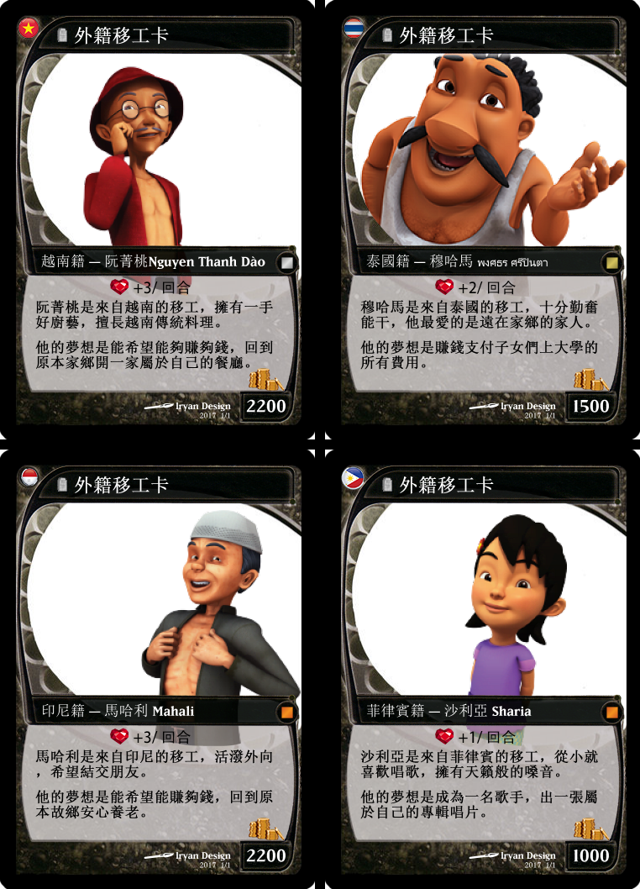
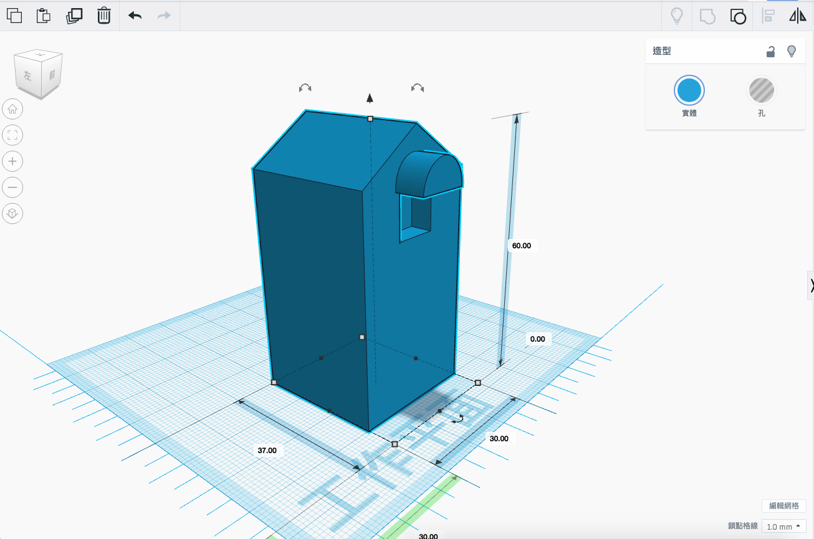

有一群人，抱著夢想千里迢迢來到台灣
他們的名字叫 「法提瑪」...
1989年開始，一群法提瑪風塵僕僕來到台灣，他們懷抱著遠大的夢想辛勤工作
為了讓遠方國度的孩子有更好的生活，為了實現在家鄉開一間小店的願望，在你我都還在被窩酣然沉睡的清早，工地、醫院、茶園都可以看見他們的身影，即使繁重的工作壓在他們瘦弱的肩膀上，他們仍不喊苦，也未曾有放棄夢想打道回鄉的念頭
然而社會上歧視的目光卻讓法提瑪們相當難受，他們不懂，素以「最美的風景是人」著稱的台灣，為何如此對待他們？
對與此，在「法提瑪」的遊戲中，讓大家能藉由此了解法提瑪在台灣的日常與困境，希望能引發各位去思考為甚麼法提瑪付出青春歲月給台灣，卻仍得不到合理的對待。
法提瑪是誰呢？
法提瑪是印尼很常見的名子，因此我們稱那群前來台灣追逐夢想的東南亞朋友為｢法提瑪」，每位法提瑪背負著期待、懷抱著夢想，勇敢地來到一個異國打拚，究竟他們快樂嗎？他們後悔這個決定嗎？
遊戲人物角色
遊戲方式
桌遊名稱：法提瑪
玩家人數：3-5人
遊戲時間：40-60分鐘
適合年齡：12歲以上
規則說明：
1.每一回合開始，雇主先抽一張「標案」，作為設計圖，勞工各抽一張角色卡，角色卡之中有各自要的「夢想」及「角色設定」。
2.雇主的目標為把標案中的建築蓋完，勞工目標為完成自己的「夢想」。
3.每棟房子都需要不同的體力值來完成，雇主至少要在7回合結束以前蓋完兩棟房子。
4.過程中雇主需使用「金錢」，換取勞工的「體力」來蓋房子，勞工可以在一定的區間內，跟雇主開價談勞力的價錢及消耗的體力，由雇主自行決定要雇用哪位勞工，可同時僱用多位勞工。每位勞工向雇主秘密協商一單位體力=多少錢及願意付出多少體力。
5.勞工每一回合都有最低生活所需金錢，若財富小於最低額度（0元）則該玩家遊戲結束。
6.每一回合開始，勞工需抽一張「事件卡」，上面代表著日常發生的狀況，有影響個人及影響群體體力值、薪水的卡牌，也有暫停及完成指定任務的卡牌。
7.回合結束後，任一勞工完成夢想或雇主蓋完建案則遊戲結束，由完成的玩家獲勝。
遊戲場地

讓我們更了解移工的日常生活
《法提瑪》讓玩家分別扮演台灣雇主和東南亞移工的角色，透過遊戲體驗在台移工的處境和雇主的難處，了解移工的處境後，更能以同理心看待出外打拼的移工們，給予尊重和包容。
遊戲目標分別是把標案的建築蓋完和存到足夠的錢完成自己的夢想。過程中雇主需使用「金錢」，換取勞工的「體力」來蓋房子
雇主至少要在7回合結束以前蓋完兩棟房子，過程中移工的體力和金錢值也不能低於基本生存標準，過程中更要注意如何運用角色設定的優勢條件達成目標。
最後秘密協商的結果會是勞工及雇主在同一回合同時離各自的目標非常接近，製造出不是雙贏就是雙輸的局面，說明勞雇間合作和競爭共存的微妙關係，如此才能使社會共創最大福利。
3D列印
雇主有三個建案要完成，分別是工廠、房子和台北101
本產品的建築模型結合南風工作坊的3D列印技術，產出三種精美細緻的模型，讓玩家可以以此為目標，移工和雇主玩家各自交換體力與金錢值，攜手合作完成建案達成夢想。
3D列印設計模型
